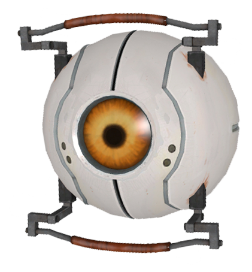

|  |
Curiostity Core
The Curiosity Core is a personality core that appears in Portal.
It is one of the cores Chell knocks off of GLaDOS during the climactic "battle" at the end of the game. It was later destroyed in an Emergency Intelligence Incinerator.
The Curiosity Core is an inquisitive, active chatterbox that speaks with a high-pitched, almost child-like, voice. The Curiosity Core is voiced by Ellen McLain.
Prior to the release of Portal 2, the Curiosity Core's model was used as a stand-in for the unused Hover Turret.
|